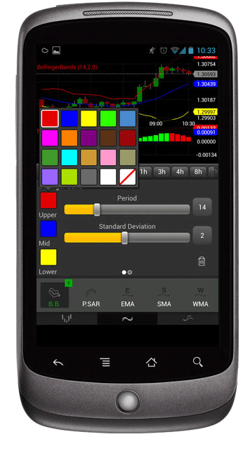
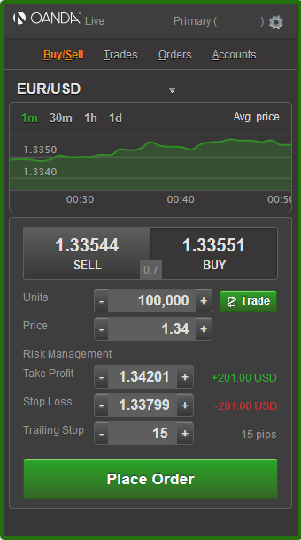
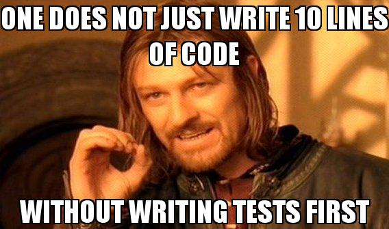

A Tale of Modern Web Development
By Mark Oosterveld & Jerome Lecomte
About OANDA
(Trading Places -- 1983)
Trading interfaces
  APIsAbout the team
- 2 senior fulltime developers
- 2 junior co-op students (every 4 months)
Our goals
- HTML5 single page application
- Mobile first, Responsive design
- No new backend development
- Behaviour-Driven Development
- Code review
- Continuous integration & deployment
Existing assets
- Couple of trading APIs
- Git & Gerrit
- Jenkins
In the beginning...
We had 4 days to decide on everything
before the co-ops started
Smashing Magazine article "Talks To Help You Become A Better Front-End Engineer in 2013"
Yeoman
yeoman.io
Rule #1

Project scaffolding made easy
The best tools already configured
The best practices already applied
Demo time
Grunt
gruntjs.com
Javascript's response to makefiles
Just another Javascript file
Easy to extend
Lots of modules available
What's in the box?
Great build process
Unit testing with PhantomJS
Preview server
LiveReload code & stylesheets
Demo time
Bower
bower.io
Package management for the web
Like 'apt-get install' for client-side Javascript libraries
Group coding session
Layout core classes of Backbone application
Get familiar with BDD & Coffeescript
Coffeescript
coffeescript.org
It's just Javascript
Only the best parts
Safety of compiled language
Demo time
Behaviour-Driven Development
Why do cars have breaks?
So they can go fast!
Drive fast without breaks...
... or drive slow
Breaks & BDD are your ticket to the fast lane
Rule #1
(courtesy of iome.me)
Mocha, Chai & Sinon.JS
visionmedia.github.io/mocha
chaijs.com
sinonjs.org
Arrange, Act, Assert, Restore
describe 'Creating an account model with data from the API', ->
account = 0
before ->
# Arrange
data =
accountName: 'Primary'
# Act
account = new Backbone.Model data
# Assert
it 'Translates the accountName property', ->
account.get('name').should.equal 'Primary'
# Restore
after ->RequireJS
requirejs.org
Asynchronuous Module Definition (AMD)
Too many modules leads to <script> ordering hell
Just explicit the module dependencies
And let RequireJS figure out the loading order
AMD in action
index.html
main.coffee
require ['views/AccountDetailsView'], (AccountDetailsView) ->
app = new AccountDetailsView()
AccountDetailsView.coffee
define ['models/AccountModel'], (AccountModel) ->
class AccountDetailsView
constructor:
@account = new AccountModel()
Backbone
backbonejs.org
Simple Model-View-Controller
Ideal for client-side single-page application
Prior experience
Demo time
SASS
sass-lang.com
Extends CSS with...
Variables
Nesting rules
Mixins
And more
Because CSS is essentially...

Demo time
Sourcemaps
- Minified Javascript
- Coffeescript
- SASS
Handlebars
handlebarsjs.com
Rule #1: don't mix markup and code
TradeListView.coffee
$('.trades-list').append
"
#{trade.id}
#{trade.get 'pair'}
...
"
Better but still fragile
index.html
TradeListView.Coffee
trade_tmpl = $ '#tmpl-trades-item'
trade_tmpl.find('.trade-id').text trade.id
trade_tmpl.find('.trade-pair').text trade.get 'pair'
$('.trades-list').append trade_tmpl.html()
Handlebars template
index.html
TradeListView.coffee
template = Handlebars.compile $('#tmpl-trades-item').html()
html = template
id: trade.id
pair: trade.get 'pair'
$('.trades-list').append html
Template precompilation
trade_item.hbs
{{id}}
{{pair}}
TradeListView.coffee
html = Handlebars.template.trades_item
id: trade.id
pair: trade.get 'pair'
$('.trades-list').append html
Living on the bleeding edge
Manually upgrading Yeoman to 1.0.0 beta from 0.9.6
Coffeescript compiler got stricter in 1.6.2
Mobile first, responsive design
Device remote debugging
Natively with Safari, Google Chrome
3rd party library Weinre for IE, Firefox, Opera
Get a Device Lab

Better yet, organize it

No new backend development
REST-like API with Cross-Origin Resource Sharing
Code Review
Changes must be approved and verified before being merged into master
Gerrit and Github
Face-off
Gerrit
(+) Remote git repository, automatically keeps in sync with upstream
(-) Austere UI, 1 review per commit
Github
(+) Very popular , 1 review per branch
(-) Manually keep fork in sync with upstream, lots of merge clouds history
Jenkins
jenkins-ci.org
Continuous integration & deployment
Code sitting in your repository is software inventory (Joel Spolsky)
Run testsuite on every new commit
If successful, package application
Deploy package to production
Monitor trend changes in key metrics
Deployment strategy
Figure it out early on to mitigate that risk
If need be, the application can ship today
Contact us
marko@oanda.com
jerome@oanda.com